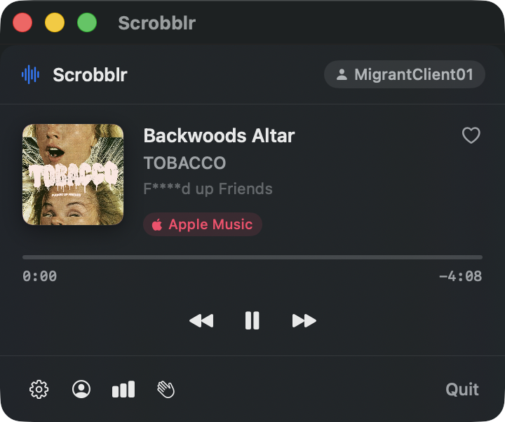
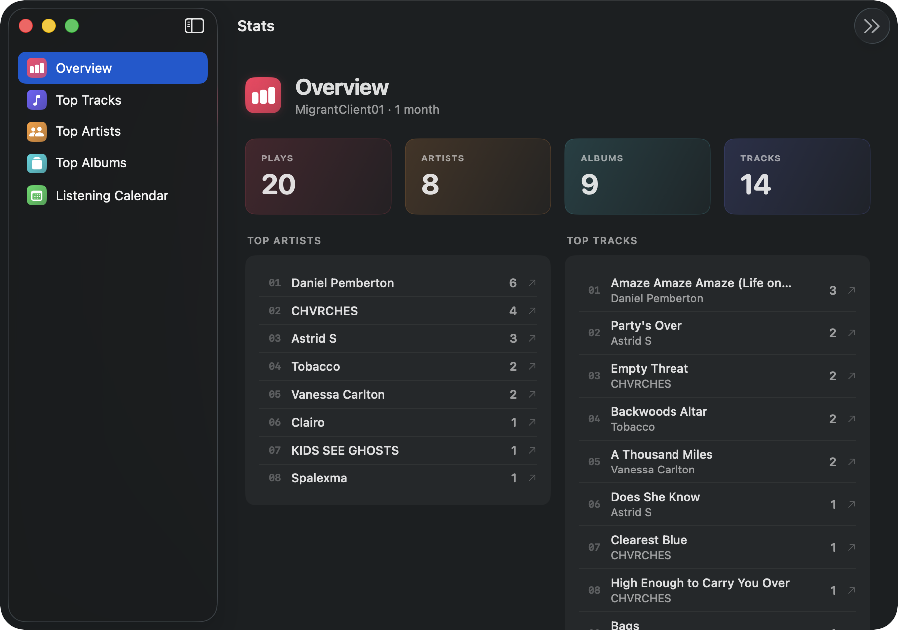
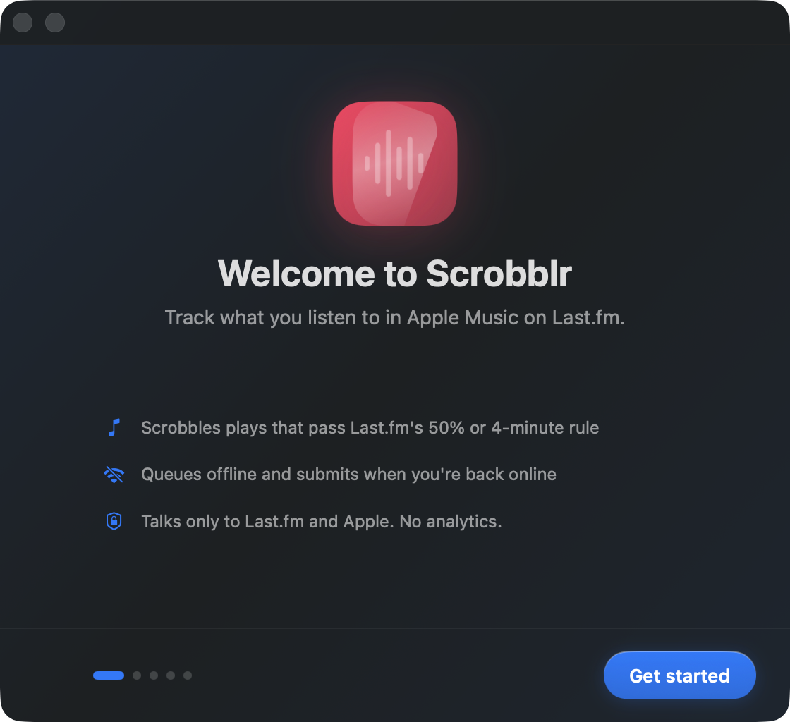

Scrobblr
A Last.fm scrobbler for Apple Music on macOS. Lives in your menu bar, notarized, and private.
A Last.fm scrobbler for Apple Music on macOS. Lives in your menu bar, notarized, and private.

Every play that meets Last.fm's 50% / 4-minute rule is queued and submitted. Pending plays survive reboots, sleep, and offline stretches.
No analytics. No author-controlled servers. Talks only to Last.fm and to Apple's anonymous Search API for album art.
A clear Music access flow with pre-prompt explainers. Credentials live in your Keychain. Logs redact track titles.
Bring your own Last.fm API key. No shared key that can break the app for everyone if it gets revoked.

